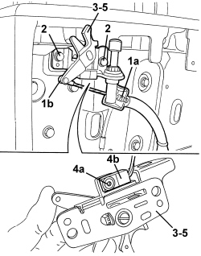

7025D24 HOOD HOUSING COMPARTMENT COVER LOCK (ONE), LEFT OR RIGHT - R.R.
- Path
- Procedures > 70 FITTINGS > 7025 COMPARTMENT COVERS > 7025D HOOD HOUSING COMPARTMENT COVER > 7025D24 HOOD HOUSING COMPARTMENT COVER LOCK (ONE), LEFT OR RIGHT - R.R.
- Kind
- repair procedure (removal / refitting; the operation number is the code)
- Applies to
- engines: 2.2 JTS, 3.2 JTS; all production periods
- Interactive page
- https://sloeber94.github.io/elrnDB-aBrrSpdr/en/#/946004084
Applies to: engines: 2.2 JTS, 3.2 JTS; all production periods
 Removing
Removing
 Refitting
Refitting- Prepare the hood for the operation.
Op. 0010T79 HOOD HYDRAULIC SYSTEM - DISCHARGE AND RESTORE PRESSURE
Op. 7040C11 HOOD HOUSING COMPARTMENT FLOOR TRIM - R.R.
Op. 7040C12 HOOD HOUSING COMPARTMENT FRONT TRIM - R.R.
1. Disconnect retainer (1a), then retainer (1b) for the opening control.
2. Undo the bolts securing the lock.
3. Move the lock slightly.
4. Undo the bolt (4a) and move the sensor (4b).
5. Keep the lock.

Applies to: engines: 2.2 JTS, 3.2 JTS; all production periods
- If necessary, remove the buffer.
Op. 7025D16 HOOD HOUSING COMPARTMENT SELF-ADJUSTING BUFFERS - R.R.
Applies to: engines: 2.2 JTS, 3.2 JTS; all production periods
Refitting
Removing- Check that the lock is not damaged.
Op. 7025D16 HOOD HOUSING COMPARTMENT SELF-ADJUSTING BUFFERS - R.R.
- Place the sensor on the lock and tighten the bolt.
- Position the lock and tighten the fixing bolts.
- Connect the retainers for the opening control.
- If discharged, restore the hood hydraulic system pressure.
Op. 7030H03 HOOD MANUAL OPENING FOLLOWING DEACTIVATION OF HYDRAULIC SYSTEM - CARRY OUT PROCEDURE
- Using the electric control, operate the hood and check that the lock is working properly.
- Close the hood housing compartment cover and check that it is correctly aligned with the bodywork.
Carry out the alignment, if necessary.
Op. 7025D10 HOOD HOUSING COMPARTMENT COVER - ALIGNMENT
Topics linked from this page (6)
- 0010T79 HOOD HYDRAULIC SYSTEM - DISCHARGE AND RESTORE PRESSURE
- 7025D10 HOOD HOUSING COMPARTMENT COVER - ALIGNMENT
- 7025D16 HOOD HOUSING COMPARTMENT SELF-ADJUSTING BUFFERS - R.R.
- 7030H03 HOOD MANUAL OPENING FOLLOWING DEACTIVATION OF HYDRAULIC SYSTEM - CARRY OUT PROCEDURE
- 7040C11 HOOD HOUSING COMPARTMENT FLOOR TRIM - R.R.
- 7040C12 HOOD HOUSING COMPARTMENT FRONT TRIM - R.R.